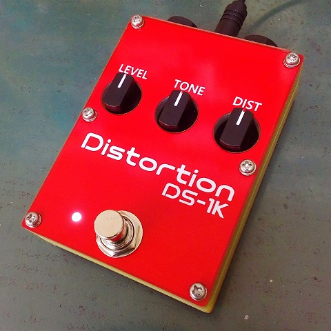
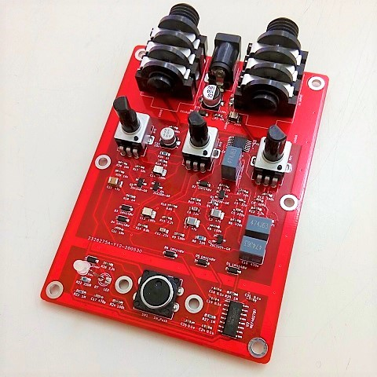
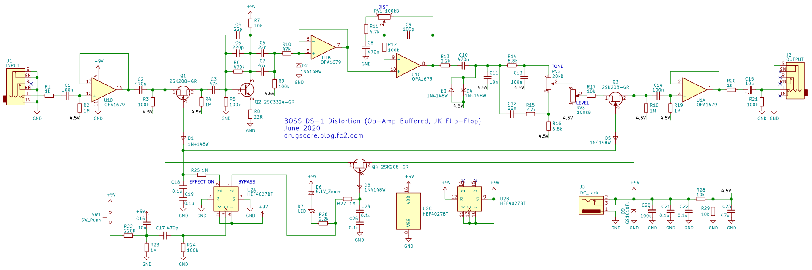
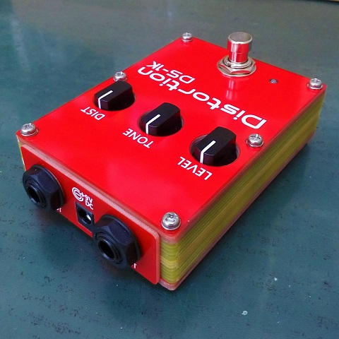
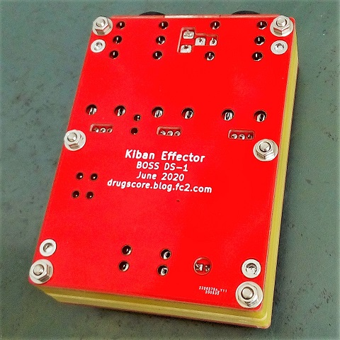
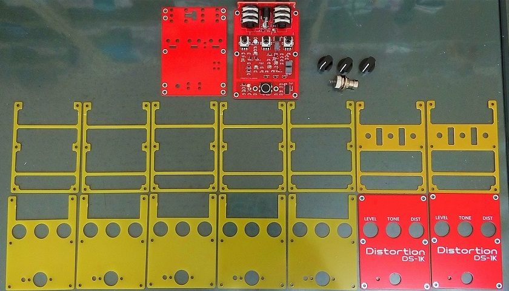
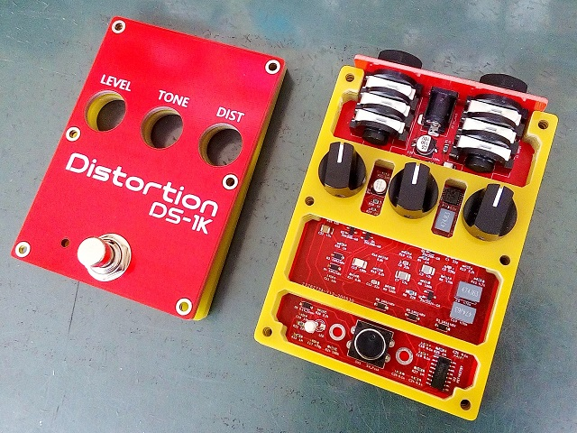

BOSS DS-1 Distortion
2020年06月18日 カテゴリー：自作エフェクター（アナログ）

電子工作界隈ではハードウェアの自作販売（同人ハードウェア）をされている人達がいらっしゃるのですが、そこでは基板やアクリル板が筐体となっているものを見かけます。エフェクターでも同様のことをやってみたいと思い今回の製作に至りました。
筐体として強度を得るため、何層にも基板を重ねます。ノイズ対策として、表面と裏面は基板の銅箔面でシールドしますが、側面は基板の取付に手間がかかり過ぎるためなしにします。なのでトゥルーバイパス方式ではシールドされていない経路が長くなり、ノイズ的に不利になります。そこでバッファありのエフェクターが候補になりますが、その中で最も一般的と思われるBOSS DS-1を選びました。
▽回路図（KiCadデータはGitHubへ）

パーツ点数を減らすため、クワッド（4回路入り）オペアンプとし、JKフリップフロップというロジックICを使いました。この4027というICはARIONのエフェクター（ARION SCH-Z）で使用されていたので、その回路をそのまま拝借しています（47nFのコンデンサが使ってある所は0.1μFを1個でも問題なさそうです）。
※元のDS-1回路では250pF、68nFのコンデンサがありますが、あまり使わない値なので別の値を並列にしています。
▽側面・底面写真

底板は4隅にメイン基板とはんだ付けできる部分があり、アースに接続できます。「基板エフェクター」と書いていますが、中間層はアクリル板を使った方が安く済むので、基板のみで構成しているものは最初で最後になりそうです。
下写真のように厚さ1.6mmの基板を16枚重ね合わせています。


中間層はすべて同じ形でも大丈夫ですが、せっかくなので3パターンに分けています。この形状のノブは表側への出っ張りが少なくてもつまみやすいです。ただノブの周りの隙間が狭すぎたので、回すときに引っかかりを感じるときがあります（GitHubのデータは修正済）。
フレームの幅は3mmですが思ったよりも強度があり、普通に踏んで壊れることはまずないでしょう。インプットジャックから最初のバッファまで、最短で到達するようにレイアウトしており、ノイズも特に問題ないと思います。丸い筐体など、いろいろな形を考えてみるのも楽しそうです。